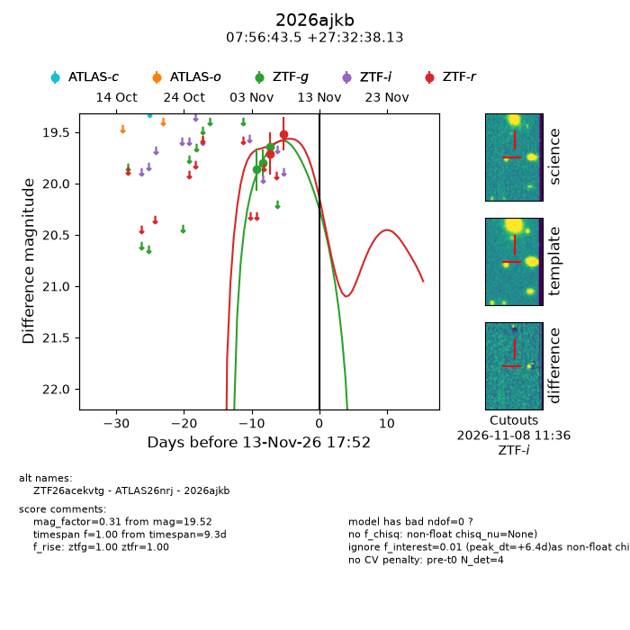
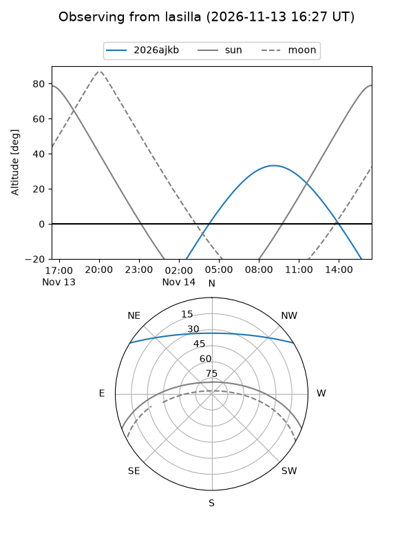
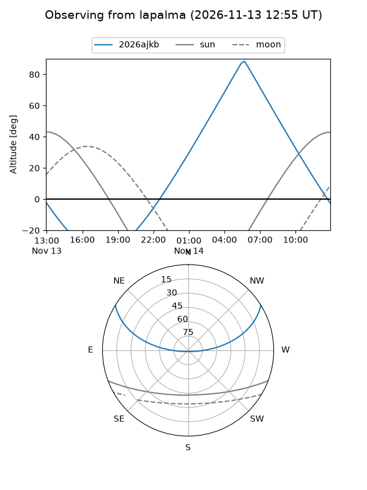
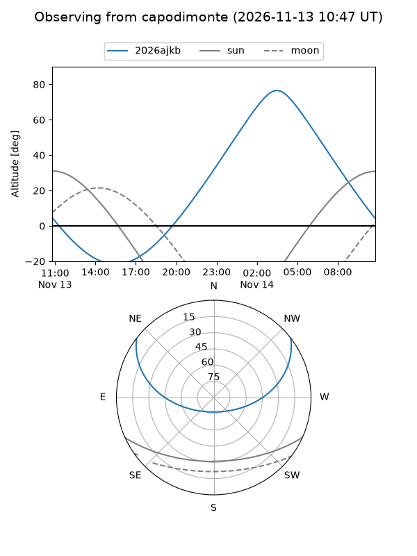
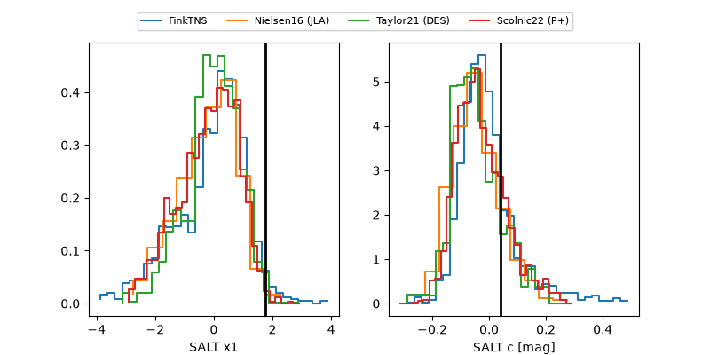

2026ajkb
Target 2026ajkb at 2026-11-13 17:58
Aliases and brokers:
FINK-ZTF: ztf.fink-portal.org/ZTF26acekvtg
Lasair-ZTF: lasair-ztf.lsst.ac.uk/objects/ZTF26acekvtg
ALeRCE-ZTF: alerce.online/object/ZTF26acekvtg
YSE-PZ: ziggy.ucolick.org/yse/transient_detail/2026ajkb
TNS name: wis-tns.org/object/2026ajkb
Direct TNS query: direct search
alt names
ZTF26acekvtg (ztf,fink_ztf)
2026ajkb (tns,yse)
ATLAS26nrj (atlas)
Coordinates:
equatorial (ra, dec) = 119.1811,+27.54392
equatorial (HMS+DMS) = 07:56:43.47,+27:32:38.13
galactic (l, b) = (193.6352,+25.63420)
Flags:
peak dt: +6.4
Photometry:
last ztfg=19.64, ztfr=19.52
3 ztfg, 2 ztfr detections
Lightcurve

Visibility



Additional plots
